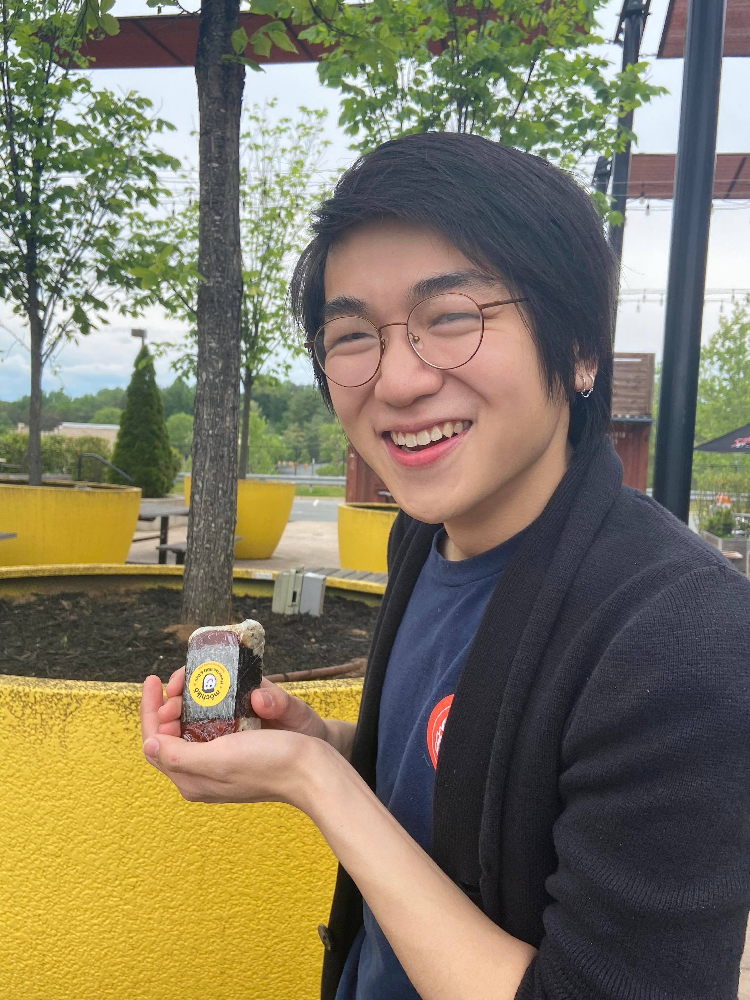

Hi, my name is Nick Wu.
I am a PhD student at the University of Maryland’s Applied Mathematics and Scientific Computation (AMSC) program.. Before that, I did my bachelor’s at the University of Virginia. There, I was very fortunate to be mentored by Prasanna Balachandran and Anil Vullikanti.
As of now, I am broadly interested in mathematical modeling, statistics & probability, and optimization.
In my free time, I enjoy playing and listening to music (especially jazz and jazz-adjacent things). I played the saxophone in UVA’s Jazz Ensemble. I also used to upload music videos on YouTube.